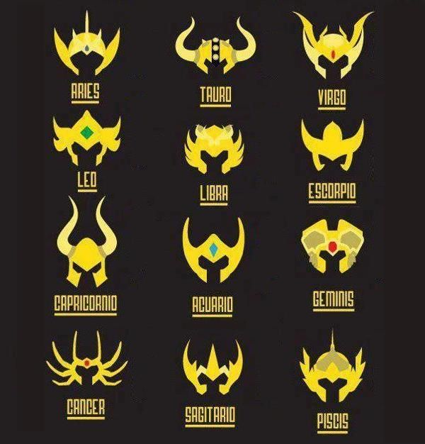

crud-fetch.html
<!DOCTYPE html>
<html lang="en">
<head>
  <meta charset="UTF-8">
  <meta http-equiv="X-UA-Compatible" content="IE=edge">
  <meta name="viewport" content="width=device-width, initial-scale=1.0">
  <title>CRUD API REST AJAX</title>
  <style>
    * {
      font-family: sans-serif;
      color: #FE5D26;
    }
    html {
      scroll-behavior: smooth;
    }
    body {
      background-color: #FAEDCA;
    }
    form input{
      color: rgb(59, 54, 54);
    }
    form > * {
      display: block;
      margin: 0.5rem auto;
    }
    h1, h2, table {
      margin: 1.5rem auto;
      text-align: center;
    }
    .crud-figure {
      display: flex;
      align-items: center;
      justify-content: center;
      flex-flow: column wrap;
      font-weight: bolder;
    }
    .crud-figure img{
      width: 25%;
      height: auto;
      border-radius: 15px;
      margin: 10px 0px;
    }
  </style>
</head>
<body>
  <h1>CRUD API REST AJAX</h1>
  <section class="crud">
    <article>
      <h2 class="crud-title">Add Knigth</h2>
      <form action="" class="crud-form">
        <input type="text" name="name" placeholder="Name" required>
        <input type="text" name="constellation" placeholder="Constellation" required>
        <input type="submit" name="submit" value="Send!" required>
        <input type="hidden" name="id">
      </form>
      <figure class="crud-figure">
        <figcaption>Enter a knigth to enter it in the database</figcaption>
        
      </figure>
    </article>
    <hr>
    <article>
      <h2>See knigths</h2>
      <table class="crud-table">
        <thead>
          <tr>
            <th>Name</th>
            <th>Constellation</th>
            <th>Acciones</th>
          </tr>
        </thead>
        <tbody></tbody>
      </table>
    </article>
</section>

<template id="crud-template">
  <tr>
    <td class="name"></td>
    <td class="constellation"></td>
    <td>
      <button class="edit">Editar</button>
      <button class="delete">Eliminar</button>
    </td>
  </tr>
</template>

<script src="./crud-fetch.js">   
</script>
</body>
</html>